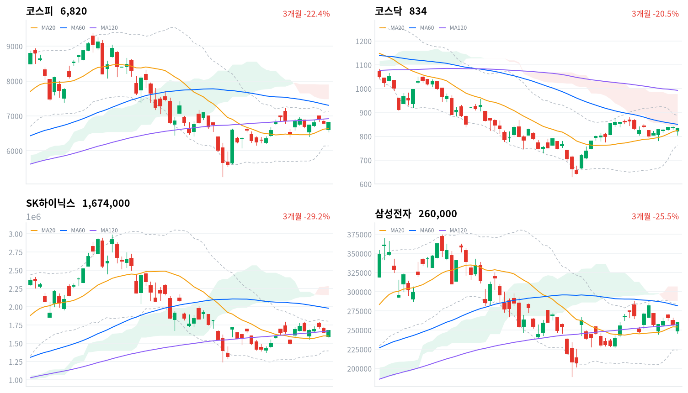
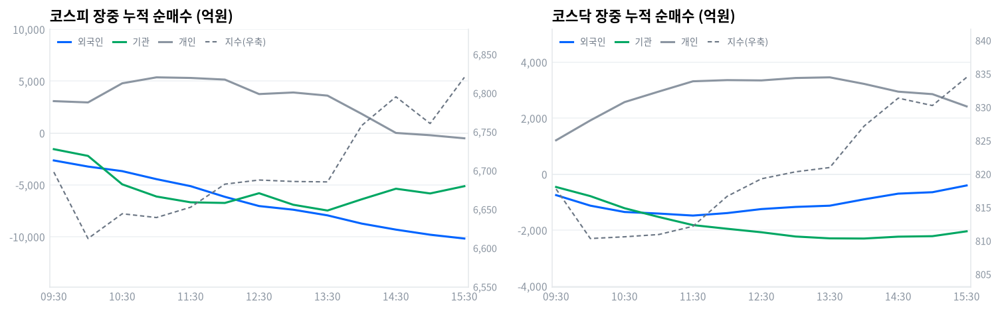

코스피는 간밤 미국 반도체주 급락 여파로 -2.58% 낮은 6,614에 출발해 장중 6,548까지 밀렸다. 오후 들어 낙폭을 모두 되돌리고 +0.46% 오른 6,820.02로 마감했다.
코스닥은 -0.49% 내린 834.29로 마감해 코스피와 갈렸다. 개인·외국인·기관이 코스피에서 모두 순매도였는데도(당일 잠정) 지수가 오른 하루다.
코스피는 오늘 +0.46% 올라 상승 마감했지만, 하루의 실상은 등락률이 아니라 궤적에 있다. 개장 직후 6,548까지 밀렸다가 종가까지 4.2% 되올랐다. 개인 1,464억원·외국인 6,434억원·기관 7,891억원이 모두 순매도였는데도(당일 잠정) 지수는 올랐다.
세 주체가 함께 팔았는데 지수가 오른 이유는 네 번째 매수자에 있다. 삼성전자가 200만주, SK하이닉스가 65만주를 장내에서 사들이겠다고 공시했다고 머니투데이가 보도했고, 장중 기타법인 누적 순매수는 정규장 마지막 관측에서 1조5,807억원까지 불어났다. 간밤 워시 연준의장의 매파 발언에 필라델피아 반도체지수가 3.47% 빠진 충격을, 회사가 자기 주식을 사는 돈이 받아낸 셈이다.
위험 노출은 다음 세션까지 유지한다. 코스피가 일목 전환선(6,698)을 되찾고 그 위에서 마감해 기술적으로는 되돌림이 확인됐지만, 오늘 매수를 낸 것은 시장이 아니라 회사였다. 자사주 매입은 규모가 정해진 일회성 수요라, 외국인 매도가 이어지면 같은 힘으로 두 번 받아주지 못한다.
이 판단이 틀렸다고 볼 조건은 둘이다. 코스피가 전환선 아래로 다시 내려가면 오늘 반등을 자사주 공시에 기댄 하루짜리 되돌림으로 보고 노출을 줄인다. 반대로 외국인이 하루라도 순매수로 돌아서면 반등을 떠받치는 주체가 회사에서 시장으로 넘어갔다는 뜻이라, 노출을 늘릴 근거가 된다.
전 거래일 미국 증시는 3대 지수가 나란히 내렸다. S&P 500이 -0.25%, 나스닥이 -0.52%, 다우가 -0.02% 하락했다. 잭슨홀에서 케빈 워시 연준의장이 물가 지표가 더 우려스럽다고 말한 뒤 금리 인상 기대가 커졌고, 필라델피아 반도체지수는 3.47% 급락했다고 라디오서울이 전했다.
같은 날 아시아는 엇갈렸다. 상해종합이 +0.86% 올랐지만 닛케이 -0.14%, 항셍 -0.07%, 대만가권 -0.44%는 내렸다. 아시아 평균은 +0.05%에 그쳤고, 코스피는 이 평균을 0.41%포인트 웃돌았다.
코스피는 전 거래일 종가보다 175포인트 낮은 6,614에 출발했다. 개장가부터 -2.58% 갭다운이었고, 장 초반 6,548까지 더 밀려 낙폭이 3.6%까지 벌어졌다. 한국 정규장이 열린 시간대 미국 선물은 반대로 올라 E-mini S&P 500이 +0.16%, 나스닥 선물이 +0.50% 상승했는데, 방향을 위로 잡아 준 이 흐름이 오후 반등의 배경 가운데 하나였다.
코스피는 오전 10시 6,612에서 저점권을 확인한 뒤 오후 내내 계단을 밟듯 자리를 높였고, 장 막판에 하루 고가에서 마감했다. 코스닥도 오전에 810까지 밀렸다가 되올랐지만 전 거래일 종가를 끝내 넘지 못했다.
원/달러 환율은 오전 9시 1,380원에서 오후 3시 1,367원까지 내렸다가 1,370원 부근에서 정규장을 마쳤다. 미국 금리 인상 기대가 커진 날 원화가 오히려 강해진 것은, 오후 들어 국내 증시가 되돌아선 흐름과 방향이 같다.
오늘을 만든 것은 두 가지다. 하나는 간밤 미국 반도체주 급락이 만든 갭다운이고, 다른 하나는 장중에 나온 두 반도체 대형주의 자사주 매입 공시인데, 앞의 것이 오전을 뒤의 것이 오후를 설명한다. 업종별로도 갈렸는데 2차전지가 2.61% 오르는 동안 건설은 3.63% 내려, 최근 한 달 가장 많이 오른 업종에서 차익 실현이 나왔다.
코스피는 오늘 6,820으로 마감해 20거래일 고점보다 5.5% 낮은 자리인데, 같은 기간 저점과 견주면 여전히 12% 높다. 오늘 장중 고가와 저가의 차이는 272포인트로 지수의 4.0%에 해당하니, 하루 안에 그만큼이 오갔다는 뜻이다. 그렇게 흔들린 끝에 20일 이동평균(6,633) 위로 올라선 채 마감했다.
| 지수 | 종가 | 등락률 | 시가 | 고가 | 저가 | 전일 종가 |
|---|---|---|---|---|---|---|
| 코스피 | 6,820.02 | +0.46% | 6,613.58 | 6,820.10 | 6,547.76 | 6,788.88 |
| 코스닥 | 834.29 | -0.49% | 821.67 | 835.50 | 805.14 | 838.41 |
6,614에서 출발한 코스피는 09:30 6,698로 한 차례 올라섰다가 오전 10시 6,612로 되밀렸다. 이후로는 방향이 바뀌어 낮 12시 6,682로 조금씩 자리를 높였다. 오후 2시 6,758, 오후 2시30분 6,795로 상승 폭을 키웠다.
오후 3시 6,761로 잠시 쉰 뒤 마지막 30분에 6,820까지 뛰었다. 하루 고가가 곧 종가였다는 것은, 마감 동시호가까지 매수가 남아 있었다는 뜻이다.
코스닥은 오전 10시 810까지 밀린 뒤 오후 2시 827로 되올랐다. 마감 무렵 834로 하루 고가 부근까지 회복했지만 전 거래일 종가 838을 넘지 못하고 소폭 하락으로 마쳤다. 코스피가 대형주 자사주 매입에 직접 반응한 반면, 그 수혜에서 비켜선 코스닥은 되돌림이 한 발 모자랐다.
오늘 반등의 방아쇠는 장중 나온 자사주 매입 공시였다. 시가총액 비중이 가장 큰 두 종목이 동시에 매수 주체로 나서면서 지수 전체가 끌려 올라왔고, 반도체 업종이 하루 기준 0.34% 상승으로 방향을 되돌린 것이 그 결과다. 반대로 코스닥은 같은 재료의 사정권 밖이라 낙폭을 다 지우지 못했다.

코스피·코스닥·SK하이닉스·삼성전자 3개월 일봉에 이동평균(20·60·120)·볼린저밴드·일목균형표 구름대를 오버레이했다. 상승 캔들은 녹색, 하락 캔들은 적색으로 표시된다.
코스피(6,820)는 일목 전환선(6,698)을 되찾고 20일 이동평균(6,633) 위에서 마감했다. 이 자리를 지키면 120일 이동평균(6,921)이 다음 저항이고, 전환선이 다시 무너지면 기준선(6,240)까지 지지선이 비어 있다.
코스닥(834)은 일목 구름 하단(842)을 바로 위 저항으로 두고 전환선(816)을 지지 삼아 마감했다. 구름 하단을 넘어서면 20일 고점(879)까지 열리고, 전환선이 밀리면 기준선(755)이 다음 지지다.
SK하이닉스(167만원)는 전환선(164만원)과 20일 이동평균(160만원)을 모두 위에 두고 마감했다. 이 두 선을 지키면 20일 고점(179만원)까지 반등 여지가 있고, 무너지면 기준선(157만원)이 다음 지지다.
삼성전자(26.0만원)는 전환선(26.5만원)을 바로 위 저항으로 두고 20일 이동평균(25.4만원)을 지지 삼아 마감했다. 전환선을 넘어서면 반등 폭을 키울 수 있고, 이동평균이 밀리면 기준선(23.9만원)까지 열린다.
위 레벨은 일목균형표와 스윙 고저를 기계적으로 계산한 값이며 투자 권유가 아니다.
| 주체 | 순매수(억원) |
|---|---|
| 개인 | -1,464 |
| 외국인 | -6,434 |
| 기관 | -7,891 |
| 주체 | 순매수(억원) |
|---|---|
| 개인 | +2,530 |
| 외국인 | -552 |
| 기관 | -2,005 |
코스피에서는 세 주체가 모두 팔았다. 기관이 7,891억원, 외국인이 6,434억원, 개인이 1,464억원을 각각 순매도했다(당일 잠정). 지수가 오른 날 개인·외국인·기관이 나란히 순매도인 것은 흔한 조합이 아니고, 그만큼 오늘 매수의 무게가 이 세 주체 밖에 있었다는 뜻이다.
코스닥은 반대였다. 개인이 2,530억원을 순매수한 반면 기관이 2,005억원, 외국인이 552억원을 순매도했다(당일 잠정). 개인 매수가 더 컸는데도 지수가 -0.49% 내린 것을 보면, 코스닥에서는 매수 강도만으로 방향이 정해지지 않았다.

누적 순매수(억원), 정규장 09:30~15:30 30분 앵커 기준. 지수는 우측 축.
| 시각 | 코스피(억원) | 코스닥(억원) | ||||
|---|---|---|---|---|---|---|
| 개인 | 외국인 | 기관 | 개인 | 외국인 | 기관 | |
| 09:30 | +3,075 | -2,643 | -1,557 | +1,211 | -748 | -458 |
| 10:00 | +2,949 | -3,234 | -2,206 | +1,919 | -1,124 | -783 |
| 10:30 | +4,793 | -3,675 | -4,947 | +2,574 | -1,350 | -1,215 |
| 11:00 | +5,368 | -4,446 | -6,121 | +2,950 | -1,406 | -1,528 |
| 11:30 | +5,310 | -5,124 | -6,680 | +3,317 | -1,478 | -1,818 |
| 12:00 | +5,152 | -6,151 | -6,741 | +3,359 | -1,389 | -1,949 |
| 12:30 | +3,756 | -7,041 | -5,803 | +3,348 | -1,246 | -2,074 |
| 13:00 | +3,908 | -7,393 | -6,917 | +3,435 | -1,169 | -2,226 |
| 13:30 | +3,606 | -7,939 | -7,472 | +3,458 | -1,125 | -2,292 |
| 14:00 | +1,845 | -8,731 | -6,388 | +3,225 | -899 | -2,298 |
| 14:30 | +8 | -9,313 | -5,370 | +2,947 | -695 | -2,231 |
| 15:00 | -211 | -9,804 | -5,825 | +2,858 | -644 | -2,214 |
| 15:30 | -509 | -10,172 | -5,127 | +2,421 | -403 | -2,040 |
코스피 외국인 누적 순매수는 하루 종일 한 방향으로만 흘렀다. 09:30 2,643억원 순매도로 시작해 낮 12시 6,151억원, 오후 3시 9,804억원으로 매도가 계속 깊어졌고, 방향을 되돌린 구간이 한 번도 없었다. 같은 시간 지수는 오전 저점에서 반등해 마감까지 올라섰으니, 오늘 가격은 외국인 수급과 정반대로 움직였다.
개인은 오전 11시43분 5,497억원 순매수까지 늘렸다가 오후 2시34분 순매도로 돌아섰다. 반등이 본격화된 오후에 개인이 차익을 실현했다는 뜻이다. 기관 안에서는 금융투자(프로그램·선물 연계 매매)가 마지막 관측에서 90억원 순매도에 그쳤고, 연기금등(정책성 장기 자금)은 593억원 순매수로 소극적이었다.
기관 누적 순매도는 오후 1시34분 7,766억원까지 깊어졌다가 마감 무렵 5,127억원으로 줄었다. 오후 들어 기관의 매도 압력이 약해진 것이 지수 반등과 시기가 겹친다.
장을 받아낸 것은 기타법인이었다. 정규장 마지막 관측에서 기타법인 누적 순매수는 1조5,807억원이었다. 같은 시각 개인·외국인·기관 세 주체의 누적 순매도를 합친 규모와 거의 그대로 맞물린다.
삼성전자와 SK하이닉스가 자기 주식을 장내에서 사들이겠다고 공시한 것이 이 숫자의 실체다.
정규장 마지막 관측에서 당일 잠정 집계로 넘어가며 두 주체가 갈렸다. 외국인은 1조172억원에서 6,434억원으로 매도 강도가 오히려 줄었고, 기관은 5,127억원에서 7,891억원으로 매도가 더 깊어졌다. 다음 거래일에는 자사주 매수가 빠진 자리를 시장 자금이 메우는지부터 확인해야 한다.
| 시장 | 차익 순매수(억원) | 비차익 순매수(억원) | 전체 순매수(억원) |
|---|---|---|---|
| 코스피 | -984 | -2,718 | -3,702 |
| 코스닥 | -186 | -1,065 | -1,251 |
코스피 프로그램 매매는 차익과 비차익이 모두 순매도였지만 규모가 크지 않았다. 방향성 바스켓인 비차익이 2,718억원, 선물 연계 기계적 매매인 차익이 984억원 순매도로 전체는 3,702억원에 그쳤다(당일 잠정). 기관 순매도(당일 잠정)의 절반에도 못 미치는 규모라, 오늘 매도를 프로그램이 주도했다고 보기는 어렵다.
코스닥은 비차익이 1,065억원 순매도로 전체 프로그램을 이끌었다(당일 잠정). 외국인 순매도 552억원(당일 잠정)보다 규모가 커, 코스닥 프로그램 매도에는 외국인 외의 주체도 섞여 있었다.
| 순위 | 종목/ETF | 구분 | 거래대금 | 비고 |
|---|---|---|---|---|
| 1 | SK하이닉스 | 개별주 | 6.11조원 | - |
| 2 | 삼성전자 | 개별주 | 4.32조원 | - |
| 3 | 반도체 테마 ETF | 테마·롱 | 1.08조원 | 7종 합산 |
| 4 | KB금융 | 개별주 | 0.52조원 | - |
| 5 | 삼성전자우 | 개별주 | 0.51조원 | - |
| 6 | LG디스플레이 | 개별주 | 0.39조원 | - |
| 7 | SK하이닉스 레버리지 | 레버리지·롱 | 0.36조원 | 2종 합산 |
| 8 | 금호전기 | 개별주 | 0.34조원 | - |
| 9 | 금호건설 | 개별주 | 0.32조원 | - |
| 10 | 포스코인터내셔널 | 개별주 | 0.29조원 | - |
단위 백만원 원본을 조 단위로 환산. 같은 기초자산 ETF는 방향별로, 같은 테마 섹터 ETF는 테마별로 묶었으며 코스피200·코스닥150 추종 지수 ETF 및 그 레버리지·인버스, 해외 ETF는 제외했다.
SK하이닉스·삼성전자·삼성전자우를 더한 개별 반도체 거래대금은 10.94조원으로, 반도체 테마 ETF 7종을 합친 1.08조원의 열 배에 이른다. 오늘 돈이 산업 전체를 사는 바스켓이 아니라 자사주를 발표한 두 종목에 곧장 몰렸다는 뜻이다.
상위 열 자리 가운데 넷을 반도체 관련이 차지했고, 그 밖에는 KB금융이 0.52조원으로 네 번째에 올랐다. 은행 업종이 하루 기준 0.03% 상승에 그친 것과 견주면 가격보다 거래가 앞선 자리다.
하루 기준으로는 2차전지가 2.61%로 가장 많이 올랐고 로봇 1.24%, 자동차 0.98%가 뒤를 이었다. 반대쪽에서는 건설이 3.63%, 방산이 3.16%, 철강소재가 2.30% 내렸다. 이 세 업종은 한 달 수익률에서 건설 34.93%, 철강소재 26.51%, 방산 16.30%로 상위권이라, 오늘 하락은 최근 급등분에 대한 차익 실현으로 읽는 편이 자연스럽다.
세부 업종으로 내려가면 오름세가 넓었는지 좁았는지가 갈린다. 전자장비와기기는 105개 종목 가운데 60개가 오르며 2.79% 상승했다. 화학도 123개 종목 중 60개가 올라 2.23% 올랐다.
반면 오늘 상승률 1위인 전자제품(7.16%)은 16개 종목 가운데 6개만 올랐다. 몇몇 종목이 끌어올린 좁은 상승이라, 업종 지수의 상승률만으로 주도 업종이라 부르기는 어렵다.
하락 쪽에서는 건강관리장비와용품이 104개 종목 가운데 35개만 오르며 1.41% 내렸다. 거래대금 상위에 반도체가 몰린 것과 겹쳐 보면, 오늘 시장은 반도체와 2차전지라는 두 축에 돈과 관심이 쏠리고 나머지는 밀려난 하루였다.
삼성전자는 26만원, SK하이닉스는 167만4천원에 마감했다. 두 종목은 각각 3,000원과 21,000원 올랐다고 머니투데이가 전했다. 장중 나온 자사주 매입 공시가 오전의 급락을 되돌린 직접적인 계기였다.
삼성전자에는 재료가 하나 더 있었다. LS증권이 이날 HBM4 수율 개선을 근거로 목표주가를 40만원에서 45만원으로 올렸다고 한국경제와 이투데이가 보도했다. 같은 증권사가 같은 날 SK하이닉스 목표주가는 330만원에서 240만원으로 낮아져, 두 회사를 보는 시선이 갈리기 시작했다는 신호로 읽힌다.
2차전지는 오늘 가장 강한 업종이었다. SK온이 북미 네오볼타파워와 9GWh 규모 리튬인산철 배터리 공급계약을 맺었다는 소식에 셀과 소재 종목이 장 초반부터 함께 올랐다고 이투데이가 전했다. 업종 지수로는 2차전지가 열두 개 섹터 가운데 가장 앞섰다.
거래대금 상위에는 LG디스플레이(0.39조원)·금호전기(0.34조원)·금호건설(0.32조원)·포스코인터내셔널(0.29조원)도 이름을 올렸다. 다만 오늘 자로 확인되는 개별 공시 재료는 없어, 대량 거래를 동반한 수급성 흐름으로 보는 편이 합리적이다.
국고채 3년물은 3.838%로 전 거래일보다 5.0bp 올랐다. 원/달러 환율은 오전 9시 1,380원에서 오후 3시 1,367원까지 12원 내려, 하루 안에서만 보면 원화가 뚜렷하게 강해진 날이다. 간밤 미국에서 금리 인상 기대가 커졌는데도 원화가 버틴 것이 오늘 환율·금리의 요점이다.
| 지표 | 금리 | 전일比(bp) | 기준일 |
|---|---|---|---|
| 국고채 3년 | 3.838% | +5.0 | 2026-08-31 |
| 국고채 10년 | 4.313% | +2.9 | 2026-08-31 |
| CD 91일 | 3.120% | -1.0 | 2026-08-31 |
| 회사채 AA- 3년 | 4.516% | +4.0 | 2026-08-31 |
| 한국은행 기준금리 | 2.75% | +25.0(전월比) | 2026-07 |
단기물이 장기물보다 더 크게 올랐다. 3년물이 5.0bp, 10년물이 2.9bp 올랐다. 장단기 금리차(10년-3년)는 47.5bp로 전 거래일 49.6bp보다 좁혀졌다.
지난주 한국은행이 기준금리를 올린 뒤 단기 구간이 먼저 반응하고 있다는 뜻이다.
회사채 AA- 3년물과 국고채 3년물의 신용 스프레드는 67.8bp로 전 거래일 68.8bp에서 소폭 좁혀졌다. 회사채 금리 자체는 4.0bp 올랐지만 국고채가 더 많이 올라 격차가 줄어든 것이라, 신용 심리가 나빠졌다고 볼 근거는 아직 없다.
표의 기준금리 행은 여전히 2.75%다. 한국은행이 지난주 금융통화위원회에서 3.00%로 올렸다고 여러 매체가 보도했지만 한국은행 통계에는 7월 결정치까지만 반영돼 있다. 시장금리는 이미 인상을 반영해 움직이고 있으므로, 표의 기준금리와 국고채 3년물의 격차는 실제보다 넓게 보인다는 점을 감안해 읽어야 한다.
케빈 워시 연준의장은 지난 금요일 잭슨홀 심포지엄 기조연설에서 물가 안정 측면의 지표들이 더 우려스럽다고 말했다고 머니투데이가 보도했다. 시장은 이를 9월 금리 인상 가능성을 열어 둔 발언으로 받아들였고, 그날 뉴욕에서 필라델피아 반도체지수가 3.47% 급락했다고 라디오서울이 전했다.
전달 경로는 할인율과 환율 두 갈래다. 미국 금리가 더 오를 것으로 보면 미래 이익을 현재 가치로 환산할 때 쓰는 할인율이 높아져 성장주와 반도체처럼 이익이 뒤에 실린 업종의 밸류에이션이 먼저 깎인다. 동시에 달러가 강해지면 외국인이 한국 주식을 들고 있을 때의 환차손 부담이 커져 매도 압력으로 이어진다.
데이터는 이 경로와 대체로 맞는다. 국고채 3년물이 5.0bp 오르며 금리 부담을 반영했고, 코스피에서 외국인은 순매도를 이어갔다(당일 잠정). 다만 원/달러 환율이 장중 내렸다는 점은 이 경로와 어긋나며, 그만큼 오늘 원화 강세는 미국 금리보다 국내 증시 반등에 더 반응한 것으로 보인다.
다음 확인 지점은 9월 미국 연방공개시장위원회다. 그때까지 나오는 미국 물가·고용 지표가 워시 의장의 표현을 뒷받침하는지가 갈림길이고, 한국 쪽에서는 외국인 순매도가 이어지는지가 같은 방향의 확인 신호다.
삼성전자가 200만주, SK하이닉스가 65만주를 장내에서 매수하겠다고 이날 공시했다고 머니투데이가 보도했다. 두 회사가 같은 날 나란히 매입 계획을 밝힌 것이라, 개별 기업의 판단을 넘어 주가 수준에 대한 신호로 읽혔다.
전달 경로는 수급이다. 회사가 시장에서 자기 주식을 사면 그만큼 유통 물량이 줄고, 매입 기간에는 가격을 떠받치는 상시 매수 주체가 하나 생긴다. 다만 그 뒤가 소각이냐 임직원 보상이냐에 따라 효과는 갈리는데, 소각으로 가야 발행주식 수가 줄어 주당순이익이 올라가는 경로까지 열린다.
오늘 가격과 수급은 이 재료를 즉시 반영했다. 정규장 마지막 관측에서 기타법인 누적 순매수가 1조5,807억원까지 불어났고, 코스피는 장중 저점에서 4.2% 되올라 상승 마감했다. 반도체 업종이 하루 기준 0.34% 상승으로 방향을 되돌린 것도 같은 재료의 결과다.
다음 확인 지점은 매입 진행 상황 공시와 소각 여부다. 매입이 끝난 뒤에도 주가가 유지되는지가 이 재료의 지속성을 가르고, 소각 공시가 뒤따르면 일회성 수급이 아니라 주주환원 정책의 변화로 해석할 근거가 생긴다.
SK온이 북미 네오볼타파워와 9GWh 규모의 리튬인산철 파우치 배터리 셀 공급계약을 맺었다고 이투데이가 보도했다. 미국 정부의 전력망 보안 강화 기조에 따른 수혜 기대도 함께 붙었다.
전달 경로는 이익이다. 대규모 장기 공급계약은 수주잔고를 늘려 향후 매출과 가동률 전망을 직접 끌어올리고, 셀 업체의 물량이 늘면 양극재·소재 업체로 주문이 따라 내려간다. 멀티플이 아니라 실적 추정치 자체가 움직이는 재료다.
가격은 이 경로와 맞아떨어졌다. 2차전지 업종이 하루 기준 가장 많이 올랐고, 셀과 소재 종목이 함께 움직였다고 이투데이가 전했다. 화학 업종이 123개 종목 가운데 60개가 오르며 2.23% 상승한 것도 같은 흐름 안에 있다.
다음 확인 지점은 추가 수주 공시와 미국 전력망 관련 정책의 세부안이다. 계약 한 건으로 업종 전체의 이익 추정치가 바뀌지는 않으므로, 후속 계약이 이어지는지를 봐야 오늘 상승이 재평가의 시작인지 하루짜리 반응인지 갈린다.
정기국회가 9월 1일 개회한다. 국회법이 정한 정례 회기라 내년도 예산안 심사가 회기의 중심에 놓인다. 반도체·전력 관련 법안이 언제 심사대에 오를지는 아직 확정되지 않았다.
전달 경로는 이익과 멀티플 둘 다에 걸린다. 보조금·세액공제는 해당 업종의 원가와 투자 여력을 직접 바꾸고, 정책 불확실성이 줄어드는 것 자체는 한국 증시에 붙은 할인 요인을 덜어 준다. 다만 두 경로 모두 법안이 실제로 통과되기 전까지는 기대에 머문다.
오늘 가격에서 이 재료가 반영된 흔적은 찾기 어렵다. 전력·전기 관련 업종이 오르기는 했지만 전기제품 1.98%, 전자장비와기기 2.79%의 상승은 자사주 공시와 반도체 반등으로 설명되는 쪽이 크다. 아직 가격에 반영되지 않은 배경 재료로 짚어 둔다.
다음 확인 지점은 본회의 일정과 상임위 법안 심사 일정이다. 반도체·전력 관련 법안이 실제 심사 대상에 오르는 시점이 확인되면 그때부터 해당 업종의 재료로 다시 볼 수 있다.